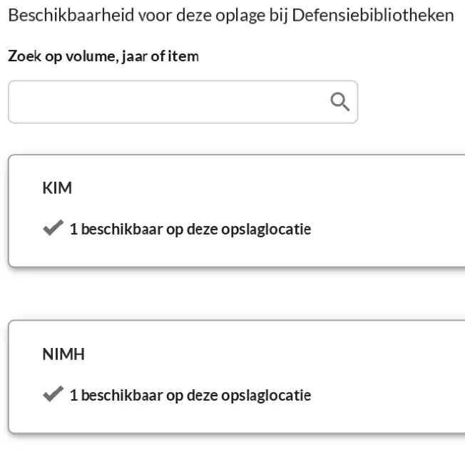

Dokaz · Kataloški zapis
Kataloški zapisi biblioteka Ministarstva odbrane, 23. marta 2026.
Odlomak
„Dostupnost ovog izdanja u bibliotekama Ministarstva odbrane. KIM: 1 dostupan na ovoj lokaciji čuvanja. NIMH: 1 dostupan na ovoj lokaciji čuvanja.“ Stranica 3, panel dostupnosti izdanja iz 2014. Prijevod s nizozemskog; izvorni tekst naveden je ispod.
Izvorni tekst
“Beschikbaarheid voor deze oplage bij Defensiebibliotheken. KIM: 1 beschikbaar op deze opslaglocatie. NIMH: 1 beschikbaar op deze opslaglocatie.” Svaka biblioteka nalazi se na zasebnoj kartici, s kvačicom ispred reda. Tekst ovdje spaja naslov i dvije kartice i izostavlja polje za pretragu koje se nalazi između njih.

Zašto je ovaj dokument važan
Vlastiti bibliotečki katalog Ministarstva odbrane prikazuje knjigu u tri njegove biblioteke: revidirano izdanje iz 2016. u Kraljevskoj vojnoj akademiji, a prvo izdanje iz 2014. u Kraljevskom nizozemskom pomorskom institutu i u Nizozemskom institutu za vojnu historiju. Na tim zapisima zasniva se rečenica u eseju.
Porijeklo
- Dokument
- Dva kataloška zapisa na tri stranice, odštampana iz kataloga biblioteka Ministarstva odbrane
- Mjesto čuvanja
- Defensiebibliotheken, biblioteke Ministarstva odbrane, mindef.on.worldcat.org
- Kataloški zapisi
- Izdanje iz 2016.: KMA, signatura KMA 79 N175 G11; izdanje iz 2014.: KIM, signatura KIM XA 74, i NIMH; OCLC brojevi 960019892 (izdanje iz 2016.) i 898360755 (izdanje iz 2014.)
- Predmetne odrednice
- Nederland, spionage, inlichtingendiensten, MIVD, Srebrenica
- Datum
- 23. marta 2026.
- Jezik
- Nizozemski
- Izvor
- Ispis u PDF na dedoofpotgeneraal.
nl/ doc/ biebs2.pdf
Citirano u: eseju „Zabrana pala, knjiga opstala“ u poglavlju (10) „Pukotine u zidu“.
Stranica dokaza: https://
Dokument: https://
Posljednja izmjena 13. septembra 2026., pristupljeno 3. oktobra 2026.

Ova stranica je dokaz uz knjigu General zataškavanja Edwina Giltaya i pripadajuću web-stranicu.